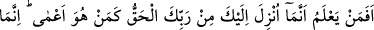
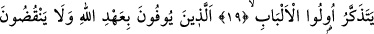
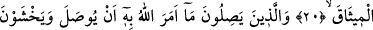
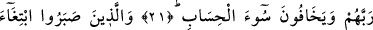
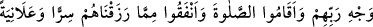
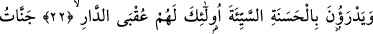
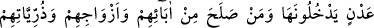
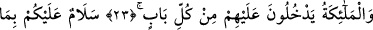
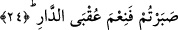

BİLEN KİMSE
KÖR GİBİ OLUR MU?
19. Rabbinden sana indirilenin hak olduğunu bilen kimse, (inkâr eden) kör kimse
gibi olur mu? Fakat ancak aklıselim sahipleri düşünüp anlar.
20. Onlar, Allah’ın ahdini yerine getirenler ve verdikleri sözü bozmayanlardır.
21. Onlar Allah’ın gözetilmesini emrettiği şeyleri gözeten, Rablerinden sakınan
ve kötü hesaptan korkan kimselerdir.
22. Yine onlar, Rablerinin rızasını isteyerek sabreden, namazı dosdoğru kılan,
kendilerine verdiğimiz rızıklardan gizli ve açık olarak (Allah yolunda) harcayan ve
kötülüğü iyilikle savan kimselerdir. İşte onlar var ya, dünya yurdunun güzel sonu
sadece onlarındır.
23. (O yurt) Adn cennetleridir; oraya babalarından, eşlerinden ve çocuklarından
sâlih olanlarla beraber girecekler, melekler de her kapıdan onların yanına
varacaklardır.
24. (Melekler:) Sabrettiğinize karşılık size selam olsun! Dünya yurdunun sonu
(cennet) ne güzeldir! (derler).
“Rabbinden sana indirilenin hak olduğunu bilen kimse” yani Allah Teâlâ’nın sana
indirdiği Kur’ân’ın hak olduğunu bilen Hamza b. Abdülmuttalib ya da Ammâr, “kör
kimse gibi olur mu?” Yani, kalbi kör olduğu için Kur’ân’ı inkâr eden Ebû Cehil gibi
olur mu? Hakk’ı görerek ona uyanla onu görmeyip ona uymayan elbette bir olmaz.